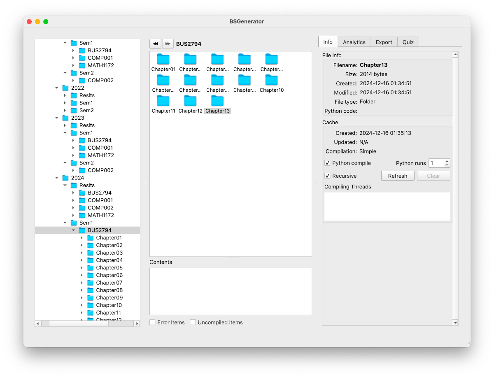

Making sense of your evaluation material
BSManager allows you to organise your question banks. You can easily navigate your filesystem, extracting information from powerful analytics tools.
Once you've selected a set of questions, you can create quizzes, which can be packaged into QTI files, compatible with the majority of modern Virtual Learning Environments and Evaluation Tools.